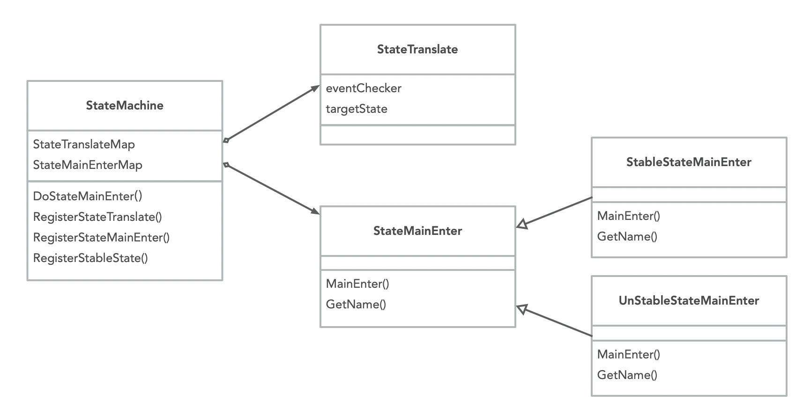

工作流引擎
设计目标与原则
交互式流程引擎
- 一个流程分为多个步骤，步骤失败可以自动重试，达到重试阈值后中断。
- 用户可以恢复中断的流程，使其从失败步骤继续执行，或者从第一步重试。
- 用户可以取消流程，使流程直接进入中断状态，并可恢复。
- 外部组件辅助流程运行时执行。比如：
- 在创建ro过程中，rw异常，可由外部组件通知流程中断。
- 流程处于中断状态时，在外部条件满足时，也可由外部组件触发流程继续。
- 可定性的异常造成的中断，支持针对不同异常定义扩展行为：
- 每种定性异常都对应一个错误码。
- 应用侧针对每种错误码可以定义后续操作，是必须人工介入，还是可以有程序自动排除故障。
- 如果是需要人工介入，用户侧可以定义操作指引。
- 如果有程序可以自动排除故障，程序触发并排除完故障后，可以通知流程引擎继续执行。
- 流程运行时支持退出，状态可持久化。比如：
- 长耗时步骤，运行时可以从内存卸载，流程进入waiting状态，外部条件满足时再触发运行时恢复。
- 外部组件可以实时采集长耗时动作的进度，并反馈给应用，完成后通知流程引擎结束waiting，运行时加载到内存中继续执行。
- 解耦和扩展
- 单一职责，内部组件有明确的职责边界。
- 流程引擎与K8S解耦，可以独立运行。
- 流程引擎与具体的资源类型解耦。
- 元数据解耦，可以定制保存形式，保存至数据库或者K8S。
- 可以自定义步骤。
- 支持步骤组合，将小粒度步骤组合成一个大步骤，在不同流程中复用。
- 支持定义钩子，流程和步骤执行前后触发自定义行为，比如记录工作流执行记录，在控制台显示。
- 工作流核心与外部依赖通过接口隔离，降低对底层组件的依赖，提供一套默认的接口实现（基于K8S实现）
实现原理
状态机
状态机引擎用于处理资源状态流转，以下图的DB集群状态为例：用户提交了创建动作，DB集群会处于创建中，等待创建成功后，集群会处于运行中，如果创建失败，集群会进入中断状态。
状态分为两大类：稳定态和非稳定态。
- 稳定态：资源进入该状态后，不会执行任何动作。比如：下图中的中断中、运行中。
- 非稳定态：在稳定状态下，外界修改了资源信息，导致需要管控执行一些动作，使集群可以再次进入稳定态。下图蓝色部分，都是非稳定态。
例如：一个运行中的集群，不会执行任何管控动作，用户提交了一个变配请求，状态机检测到该事件，会将DB集群状态变为变配中，此时管控开始变更DB集群规格，等完成后，DB集群再次进入运行中这个稳定态。

状态机引擎需要包含以下组件：
- StateMachine：状态机实例，其中包含两个Map
- StateTranslateMap 状态转换表，保存着稳定态可以转换到哪些非稳定态，key是稳定态。
- StateMainEnterMap 状态行为表，保存着进入到某状态后需要执行的行为。
- StateTranslate 状态转换器
- eventChecker 用于检测是否触发了某个状态转换事件。
- targetState 如果eventChecker检测触发了某个事件，状态将由稳定态转换为非稳定态。
- StateMainEnter 状态入口
- StableStateMainEnter 稳定态入口，MainEnter中不会执行任何业务逻辑。
- UnStableStateMainEnter 非稳定态入口，MainEnter中执行具体的业务逻辑。此处需要自定义实现，比如扩容中状态、变配中状态，都是需要执行不同逻辑的。

通过下面的时序图说明上面几个组件之间的调用关系：
- 管控在启动时实例化StateMachine的一个实例，并且注册稳定态及非稳定态、状态入口、状态转换器。
用户通过更改k8s自定义资源（Resource）提交变配指令。
管控operator一直在监听资源变化，它拿到资源变化的通知，触发调谐（Reconcile）。
调谐入口执行StateMachine的DoStateMainEnter，进入工作流入口。
StateMachine遍历自己的StateTranslateMap，并按个执行eventChecker，检测是否触发了状态变更。
针对变配场景，状态会由运行中转换为变配中，并且执行变配状态对应的MainEnter。
变配执行完，自定义实现的逻辑中会更改资源状态，使DB集群进入“运行中”。
此时会再次进入调谐。
同第4步，执行StateMachine的DoStateMainEnter。
同第5步，但此时集群处于运行中，是稳定态。
同第6步，但此时会执行稳定态MainEnter，即不会有任何行为。

工作流引擎

工作流引擎由两大部分组成：工作流核心和接口实现
- 工作流核心：工作流核心封装了工作流的稳定逻辑。可以脱离K8S执行。
- 接口实现：接口部分定义了核心与外界的交互。包括元数据如何持久化、工作流与哪类资源交互、流程包含哪些步骤等，这些都是需要使用方自定义的逻辑。引擎提供了一套基于K8S的默认接口实现。
工作流核心部分包含以下组件：
WorkflowManager：工作流管理器
- 在实例化时将接口的具体实现注册给它，让它知道元数据如何加载、运行时数据如何保存、运行时执行哪些Hook方法，工作流与哪类资源进行交互。
ResourceWorkflow：跟踪和管理某个资源的流程
- 通过WorkflowManager的CreateResourceWorkflow方法创建，是某个特定资源实例的流程管理器。比如：polar-rwo-762ee1p8q08这个DB集群，执行过哪些流程，哪些已经执行完，哪个流程还在执行中，包括为该DB集群启动一个新流程，都是由这个组件管理的。
WorkflowRuntime：工作流运行时
- ResourceWorkflow执行Run(flowName)，可以启动一个新流程，流程启动后会产生一个WorkflowRuntime实例。
- 在新流程执行前，都要通过RunLastUnCompletedRuntime方法将未完成的旧流程执行完。
StepRuntime：步骤运行时
- WorkflowRuntime包含多个StepRuntime。
- 它会在步骤执行过程中更改步骤状态（准备中、初始化完成、执行完成、执行失败），记录执行时间、重试次数、输出结果，判断是否达到重试阈值。
- 每个StepRuntime中包含一个StepActionInstance，代表该步骤要执行的动作。
MementoCareTaker：用于运行时元数据持久化
- 用于WorkflowRuntime数据持久化，在步骤执行、流程执行过程中都会将运行时信息持久化到存储，在管控程序重新选主、程序重启等场景下，可以读取元数据，恢复旧流程的执行。
- 提供GetNotCompleteFlow()方法，查询未完成的流程。
接口定义部分包含以下组件：
- Resource：工作流需要与资源进行协作，查询资源信息、保存资源状态等，这里抽象出一个基础的Resource。针对K8S资源，定义了一个KubeResource。
- Logger：日志接口。不和特定的日志组件耦合，并定义日志的基础格式。
- Recover：如何中断及恢复流程的执行。提供一个基于K8S的默认实现DefaultRecover
- MetaDataLoader：如果加载工作流元数据。提供一个默认实现DefaultMetaDataLoader，从目录加载yaml。
- StepAction：每个流程步骤执行的具体动作，需要在业务代码中实现该接口，并注册到WorkflowManager。
- Hook：流程初始化、执行完成、执行失败、步骤执行前后都会触发该接口定义的钩子方法。提供一个默认实现DefaultHook，用于记录流程执行历史。
- MemontoStorage：MementoCareTaker需要通过MemontoStorage持久化运行时数据，提供一个默认实现DefaultMemontoStorage，将工作流运行时数据保存到K8S的configmap中。